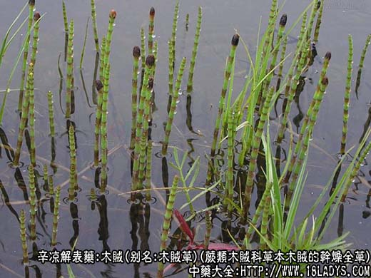
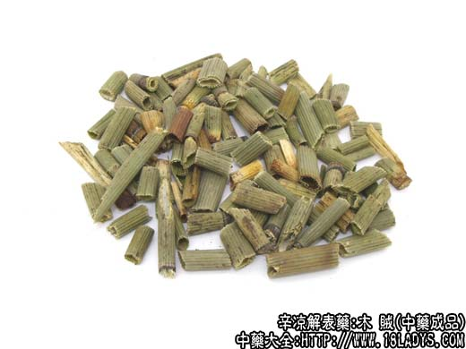
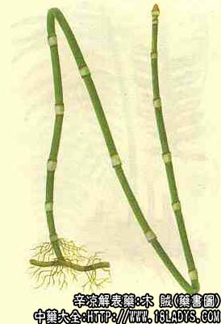

木贼为较常用中药。始载《嘉祐本草》。
别名：木贼草、锉草。
来源：为蕨类木贼科多年生常绿草本植物木贼的干燥全草。野生山坡林下、河岸湿地。
产地：主产于黑龙江、吉林、辽宁、陕西等地；全国大部地区均有生产。
性状鉴别：木贼为长管状，中空有节，不分枝。长30～100厘米，直径3～8毫米，节间长3～6厘米。表面灰绿色或黄绿色，有多数纵棱，顺直排列，其上密生细刺，触之有粗糙感。节处有筒状深棕色的鳞叶。易自节处拔脱。质脆，易折断，断面中空，内有灰白色或浅绿色的薄膜。气无，味甘微苦涩。
以茎粗长，色绿，质厚，不脱节者为佳。
主要成分：含木贼酸、二氧化硅黄酮甙等。
功效与作用：消炎、收敛、利尿。
炮制：切咀，生用。
性味：甘、微苦，平。
归经：入肺、胆、肝经。
功能：散风，退翳。
主治：目生云翳，迎风流泪；外治脱肛（烧存性研末外敷）。
临床应用：主要用于眼科，通过消炎而能明目祛风；通窍止泪，有眼病而表现有表症者用之最适宜。主治由风热而引起的目赤、翳障（急性结膜炎）配菊花、白蒺藜、决明子等；也治眼花多泪（急性泪囊炎），配防风、苍术、夏枯草等。
用量：3～9g。
处方举例：急结炎方：木贼3g、菊花9g、白蒺藜6g、决明子1g，水煎服，治急性结膜炎。
注：1、可作木工的磨光材料。
2、同属植物笔管草与木贼近似，但茎有分枝，仅叶鞘基部有黑色的细圈，鞘片背上无线沟。分布于中南、西南和长江上游。与木贼效用相同。
3、同科植物节节草。茎细，常在中部以下有分枝，叶鞘筒疏松，基部无黑色的细圈。质柔软，纤维强，不易折断。味甘。分布全国各地。习惯不作木贼药用。